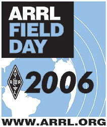

News from MARC Events |
MARC Field Day 2012 |
MARC Field Day 2011 |
MARC Field Day 2008 in retrospect |
MARC Field Day 2007 announcement |

MARC Field Day 2006 announcement
|
|
MARC set up indoor and outdoor displays at the 2006 Science Day in Rockville. To see a few photos click here ... |

Field Day June 25-26,2005. More ... |

MARC set up field day operations on June 26,2004 at the Montgomery College, Germantown Campus. MARC operated as a 3A station with the callsign KV3B. More ... |
|
A "blast from the past" - MARC members do a public demonstration
on Amateur Radio at Wheaton Plaza - August, 197?. Was it really
almost 30 years ago????
More ...
|